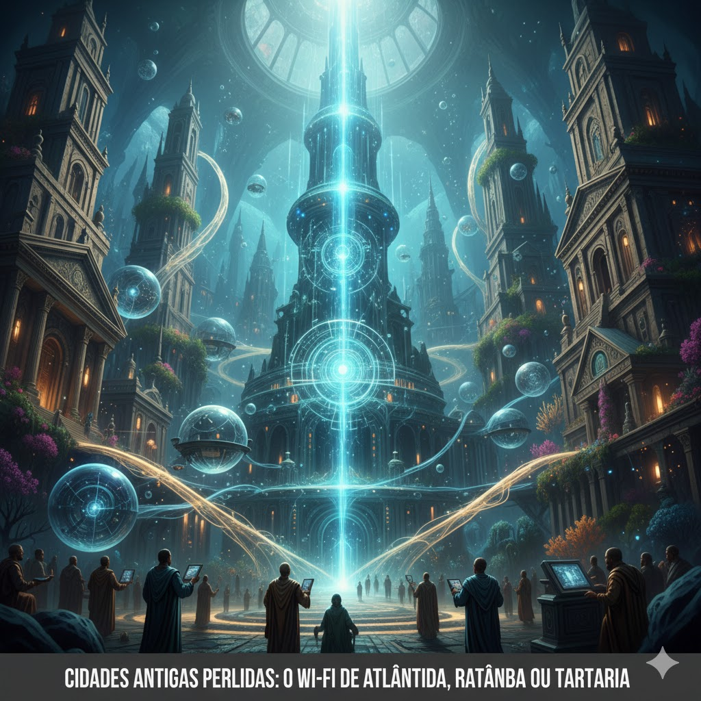

🏛️ Cidades Perdidas: Existiu um "Wi-Fi" no passado?
O mundo é cheio de mistérios, e algumas teorias sugerem que civilizações antigas tinham tecnologias que só alcançamos hoje. Mas o que é história e o que é lenda? Vamos explorar:
1. Atlântida: A Ilha dos CristaisRelatada por Platão há mais de 2 mil anos, Atlântida é a mãe de todas as cidades perdidas.
A lenda: Dizem que usavam cristais gigantes para canalizar energia e tinham máquinas voadoras.
A realidade: Para a maioria dos historiadores, era uma metáfora filosófica de Platão, não um lugar real com internet sem fio.
2. Ratanabá: O Mistério da AmazôniaEssa teoria brasileira afirma que existe uma metrópole futurista escondida sob a floresta.
A lenda: Seria a "capital do mundo", conectada por túneis subterrâneos e possuiria tecnologias de luz infinita.
A realidade: Não há evidência arqueológica de cidades futuristas na Amazônia, apenas geoglifos e formações naturais.
3. Tartária: A Energia que vem do CéuUma teoria diz que um império global foi "apagado" da história.
A lenda: Eles teriam dominado a energia livre! As cúpulas de igrejas antigas seriam captadores de eletricidade do ar.
A realidade: A Tartária era apenas um nome geográfico para a Ásia Central. A arquitetura incrível é fruto de engenharia clássica.

💡 Por que amamos essas histórias?
Embora a ciência não comprove o "Wi-Fi de Atlântida", essas lendas mostram nossa fascinação pelo desconhecido. O passado humano é brilhante feito de pedra e bronze, o que é tão impressionante quanto qualquer sinal de rádio!